|
collection
|
-鞍馬・貴船編（2008）- 鞍馬・貴船に行ってみよう、と突然思って行ってきました。 京都に住んで約10年経ちますが、実は一度も訪れたことがありませんでした。 天気も良かったので、サトちゃんと一緒に出掛けてみました。 2008.5 
出町柳駅から叡山電鉄に乗り、鞍馬までやってきました。 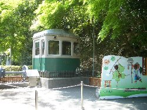 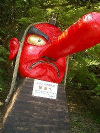 鞍馬天狗。駅を降りてすぐのところにありました。とても大きいです（笑） どこからか甘いお香の良い香りがしてきます。 微かに、という感じではなく、とてもはっきり。 とても不思議な感じがします。 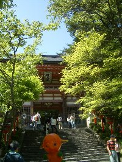 鞍馬山の仁王門前です。 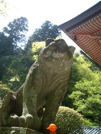 狛犬ならぬ狛虎。とっても大きいです。 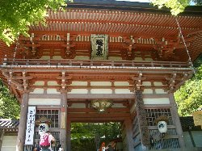 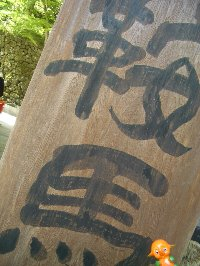 門の前で記念撮影。 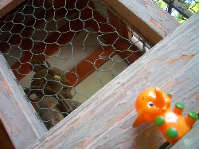 湛慶作の仁王尊像だそうです。 鞍馬山は信仰の道場で、仁王尊像は浄域（鞍馬山）への結界の役目のようです。 これから、ケーブルに乗ります。 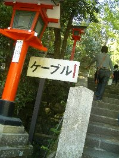 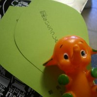 ケーブルの入場券 有名ですが、このケーブルは 日本国内で唯一お寺（鞍馬寺）が所有しています。 運賃ではなくて寄付なんですね～。 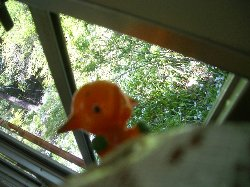 ケーブルに乗りました。 「良い眺めだな～」 山門駅から多宝塔駅まで乗車したのですが、 多宝塔駅まで上り坂になっており、後ろ向きに進んでいったので ちょっとドキドキしてしまいました。前が･･･怖い （落ちないって！大丈夫だよｗ） 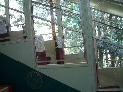 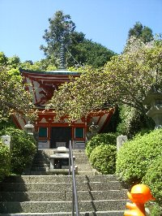 多宝塔 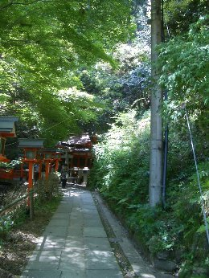 この道を500mほど歩くと本殿金堂があります。 ここも甘いお香の香りで満ちています。 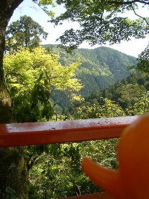 到着しました。標高410mです。 ちょっと一休み。 ここでお昼を食べていて、本殿金堂の写真撮り忘れたよｗ 中は撮影禁止だったけど、表は撮影してもよかったのにね。 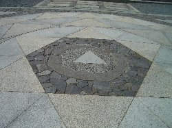 面白いので、パチリ。 本殿金堂の手前の床。 本殿金堂には三尊尊天が奉安されています。 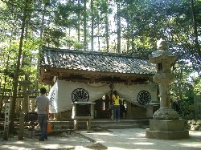 奥の院魔王殿 護法魔王尊が奉安されています。 ここまで1.4㎞ほど歩いてきました。 こんなに山道歩いたの久しぶりだな～。 座禅をしている方もいます。 全く知識を入れずやって来ましたが、鞍馬山は宗派にこだわらない場所なのだそうです。 座禅・念仏・ヨガ・祝詞･･･自分の信じるかたちで、ご本尊の尊天の霊気を受けられるそうです。 鞍馬山に着いたときから、お香の良い香りが満ちていて驚きました。 運動不足だったのでとても疲れましたが、山やお香の良い香りでとても気分が落ち着きました。 この後、ぐねぐね山道をまた歩き貴船神社へ。 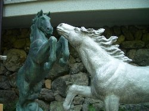 貴船神社には縁結びの神様が祀られているそうです。 絵馬発祥の社でもあるそうです。 この神馬の絵馬もありました。 有名なのは「水占みくじ」 神社の霊泉に浮かべると文字が浮き出てくるという変わったおみくじです。 ･･･しませんでしたｗ 今年はもうおみくじ引いたからな（汗） 御参りだけしました。 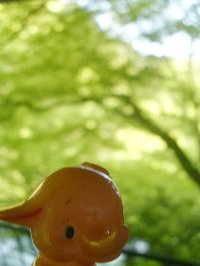 「･･･お腹すいた。」 というわけで、おやつの時間ですｗ 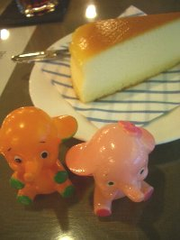 チーズケーキとアイスティーです。 さあ、帰ろうか。 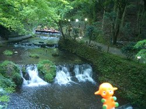 貴船川。初夏から秋ぐらいまで床でお料理が楽しめます。 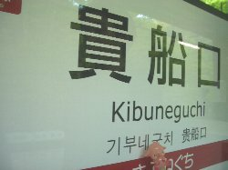 駅に到着♪ 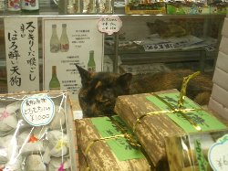 「いらっしゃいませ、何か買ってく？」 無事に家に帰れそうですが、明日が怖い･･･｡ 確実に筋肉痛です＾＾； -鞍馬・貴船編 おわり- 
Copyright(c) 2008 なないろまーぶる All rights reserved |